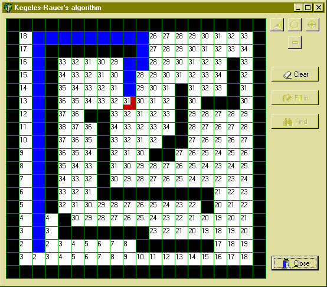

Определение кратчайшего пути между двумя точками
Эта тема уже поднималась на страницах нашего сайта (в рубрике Подземелье магов, "Алгоритм обхода препятствий." А. Моисеевым ). Там была приведена реализация алгоритма Дейкстры. Но эта реализация оперирует не совсем понятными мне понятиями типов территорий (всего 6 типов) и, несомненно, предоставляя бОльшие возможности разработчику, становится сложнее по определению. Мне же было необходимо определить всего две вещи: существует ли в принципе какой-нибудь путь, и, если существует, найти кратчайший. (Как это происходит в известных играх Lines или Sokoban).
Здесь я хотел бы описать метод, разработанный мной и моим коллегой Манфредом Рауером (Manfred Rauer). Мы не претендуем на приоритет но, так как не являемся профессиональными математиками и не знаем известен ли уже этот алгоритм (во всяком случае я не нашел похожего описания), мы назвали его Алгоритмом Кегелеса-Рауера.
Задача. Определить кратчайший путь между двумя точками на плоскости, обходя имеющиеся на ней препятствия.
Алгоритм. Плоскость (поле) на которой следует определить путь представляется массивом чисел (integer), в котором преграда получает значение "-1", точка финиша (цель) - значение "1", а все остальные точки - значения "0". Затем от цели (элемент со значением "1") веером во все стороны, пока не встретится преграда (-1) элементам массива, имеющим нулевое значение присваиваются значения на единицу большие, чем у соседнего элемента.
Выглядит это, приблизительно так, если поле символически изобразить таким образом:
#######
# S #
# ### #
# #
# F #
####### где # - преграда, S и F - точки старта и финиша;
то массив будет иметь следующий вид:
после инициализации: после заполнения значениями:
-1 -1 -1 -1 -1 -1 -1 -1 -1 -1 -1 -1 -1 -1
-1 0 0 0 0 0 -1 -1 6 7 8 7 6 -1
-1 0 -1 -1 -1 0 -1 -1 5 -1 -1 -1 5 -1
-1 0 0 0 0 0 -1 -1 4 3 2 3 4 -1
-1 0 0 1 0 0 -1 -1 3 2 1 2 3 -1
-1 -1 -1 -1 -1 -1 -1 -1 -1 -1 -1 -1 -1 -1
Теперь проверяется значение соответствующее точке начала движения. Если оно равно 0 - то пути нет, а если оно имеет какое-то значение, то остается проследовать по числам в массиве в убывающем порядке до цифры 1.
Все.
PS.
Есть 2 ограничения. Предполагается, что поле конечно, (например, ограничено со всех сторон преградами) и двигаться можно только по горизонтали или вертикали (диагональное движение отсутствует).
Реализация. Механизма нахождения кратчайшего пути показан в приводимой ниже процедуре, в которую передаются координаты точек начала и конца движения. Из этой процедуры я намерено вывел все дополнительные проверки (напр., такие как if Map[RowFinish, ColFinish] = - 1 then Exit;), чтобы не затруднять понимание ее сути.
// Я предполагаю, что размер поля не больше, чем 255 х 255 точек (или клеток),
// в противном случае, передаваемые аргументы должны быть больших
// целочисленных типов, напр., Word или Cardinal.
// Кроме того предполагается, что переменные FeldHeight и FeldWidth,
// определяющие размеры поля, объявлены как глобальные, если нет, то их
// тоже нужно передать в процедуру, в качестве дополнительных аргументов
procedure Find(RowStart, ColStart, RowFinish, ColFinish: Byte);
var
row, // строка массива
col, // столбец массива
i, // счетчик итераций циклов
Number: Word; // количество элементов массива со значением 0
// для определения верхнего предела цикла замены
// нулей рабочими значениями
Val: Integer; // значение текущего элемента массива
Map: array of array of Integer; // главный рабочий массив
begin
// Задаю размер массива, если размеры поля известны заранее (на этапе проектирования),
// и используется статический двумерный массив, то эта комманда опускается
SetLength(Map, FeldHeight, FeldWidth);
// Заполняю массив значениями: преграда -1, цель (финиш) 1, все остальное 0
// Значения беруться из глобального массива ActiveFeld, определяющего профиль поля
for col := 0 to FeldWidth - 1 do
for row := 0 to FeldHeight - 1 do
if (ActiveFeld[row, col] = '#')
then Map[row, col] := -1
else Map[row, col] := 0;
// В принципе поле ActiveFeld может быть бОльшим, чем проверяемый нами в данный
// момент участок, тогда надо просто в выражении (ActiveFeld[row, col] = '#') задать
// смещение для строк и столбцов массива ActiveFeld (ActiveFeld[row+X, col+Y] = '#')
// Задаю значение для элемента массива соответствующего точке финиша
Map[RowFinish, ColFinish] := 1;
// На всякий случай обнуляю переменные, хоть это и не обязательно, т. к. Delphi,
// при их создании сама присвоит им нулевые значения. Но так понятнее.
Number := 0;
Val := 0;
// Определяю количество незаполненных точек (клеток поля) - элементов
// массива с нулевыми значениями. Это нужно для того, чтобы задать верхнюю границу
// следующего цикла, заполняющего массив значениями. В любом случае число его
// итераций не может превышать количества нулевых элементов
for col := 0 to FeldWidth - 1 do
for row := 0 to FeldHeight - 1 do
if Map[row, col] = 0 then Inc(Number);
// Заменяю нулевые значения массива соответствующими числами
for i := 1 to Number do begin
Inc(Val);
for col := 1 to FeldWidth - 2 do
for row := 1 to FeldHeight - 2 do
if Map[row, col] = Val
then begin
if Map[row + 1, col] = 0 then Map[row + 1, col] := Val + 1;
if Map[row - 1, col] = 0 then Map[row - 1, col] := Val + 1;
if Map[row, col + 1] = 0 then Map[row, col + 1] := Val + 1;
if Map[row, col - 1] = 0 then Map[row, col - 1] := Val + 1;
end;
end;
// Определяю есть ли путь в принципе. Если пути нет (элемент массива с координатами
// точки начала пути равен нулю), то выполняю какие-то действия (напр. Beep; Exit; как
// приведено ниже)
if Map[RowStart, ColStart] = 0
then begin
Beep;
Exit;
end;
// Сохраняю в переменной Val значение элемента массива,
// соответствующего точке старта
Val := Map[RowStart, ColStart];
// Прокладываю путь, последовательно спускаясь по точкам (клеткам поля)
// от значения соответствующего точке старта к единице (точке финиша)
// Процедура SetDirection() определяет конкретные действия например, закрашивание
// клетки поля или перемещение элемента по полю. Параметром в нее передается
// направление движения. Здесь предполагается, что процедура SetDirection
// описана как procedure SetDirection (ADir: TDirection); а тип TDirection, как
// type TDirection = (L, R, U, D); хоть это и избавляет от дополнительных ошибок,
// но не обязательно, можно передавать параметрами числа, или символы.
// Например, SetDirection('U'); для направления вверх.
// Также предполагается, что SetDirection изменяет координаты ColStart и RowStart,
// в противном случае изменение координат необходимо произвести в цикле While,
// как это сделано в прилагаемой демонстрационной программе
while (Val >= 2) do begin
col := ColStart;
row := RowStart;
if Map[row, col] = Val
then begin
Dec(Val);
if Map[row + 1, col] = Val
then SetDirection(D);
else if Map[row - 1, col] = Val
then SetDirection(U);
else if Map[ro, c + 1] = Val
then SetDirection(R);
else if Map[ro, c - 1] = Val
then SetDirection(L);
end; //if
end; //while
end;
Вот и все. Хочу добавить, что в прилагаемой демонстрационной программе я использовал идею А. Моисеева графически отображать путь на канве Timage, да не сочтите это за плагиат. Код программы не снабжен комментариями по двум причинам: во-первых все достаточно подробно объяснено здесь, а во-вторых я работаю на немецком Windows, по-этому писать русские комментарии просто нет возможности (Delphi не позволяет).
Программа работает очень просто. Тремя верхними кнопками задается элемент, который будет рисоваться при щелчке на поле (стенка, точка начала пути и точка конца пути). В случае ошибочно нанесенного элемента, его можно удалить нажав на кнопку Delete (с минусом) и щелкнув на удаляемом элементе. Кнопка Clear очищает поле, Fill in заполняет поле значениями массива (исключительно в демонстрационных целях) и Find - находит путь. Я разделил этот процесс на две процедуры для наглядности. Поскольку программа демонстрационная (читай упрощенная и не претендующая на оптимальность), я не добавлял в нее некоторые проверки на действия пользователя, по-этому просьба: не стирайте бордюр - это может привести к ошибкам.
С глубоким уважением ко всем рыцарям Королевства,Вадим Кегелес.